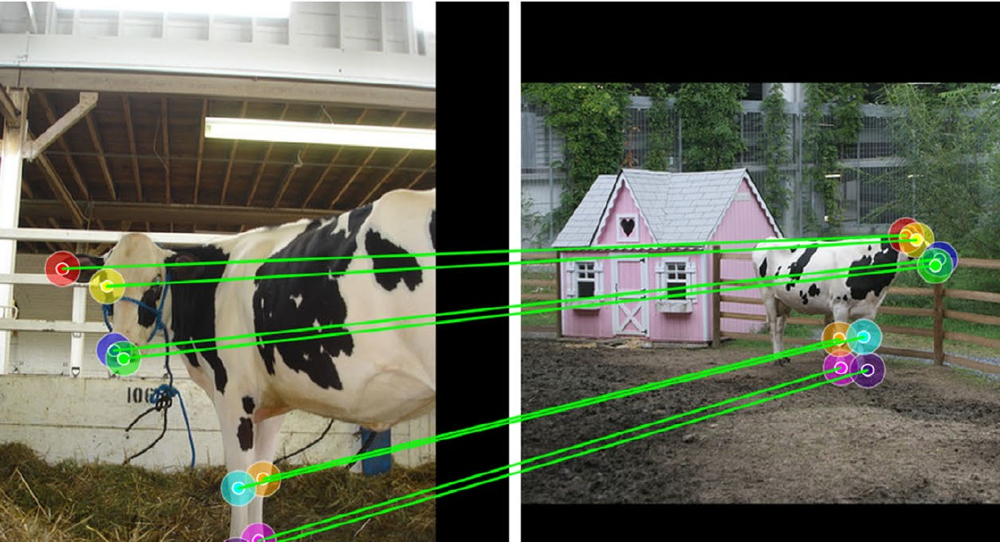
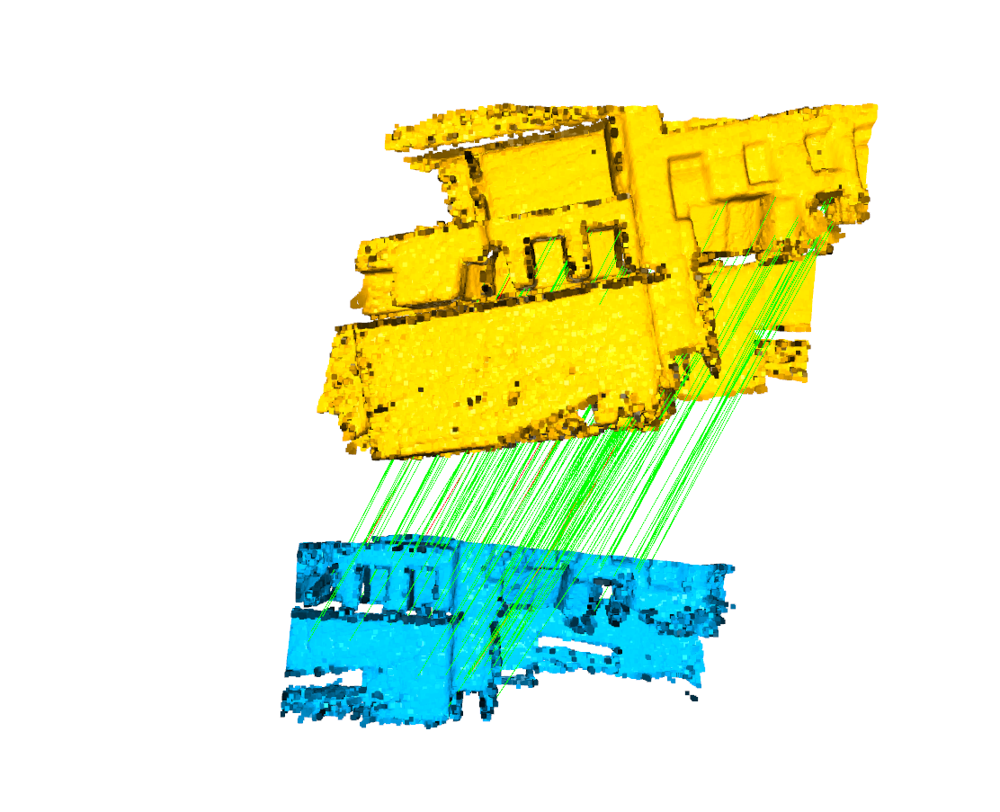
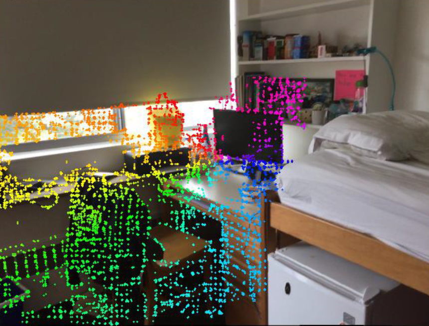
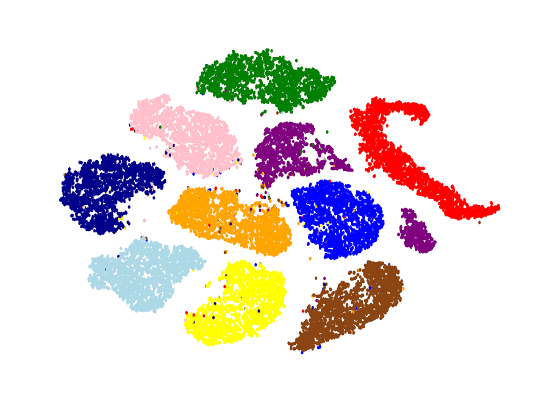
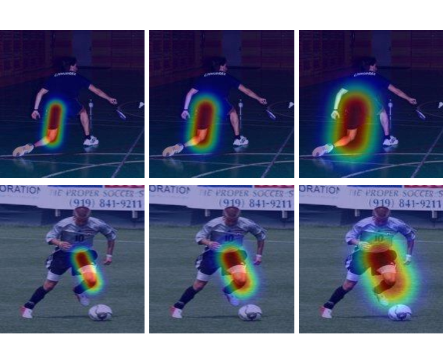
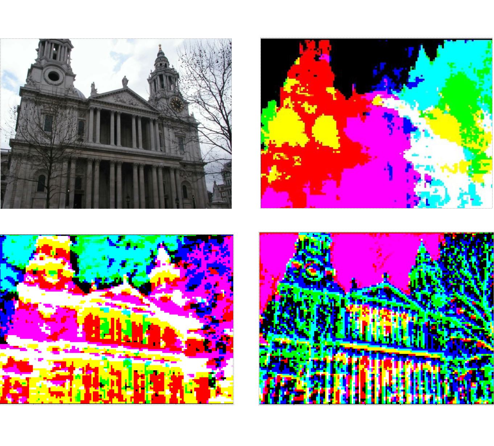
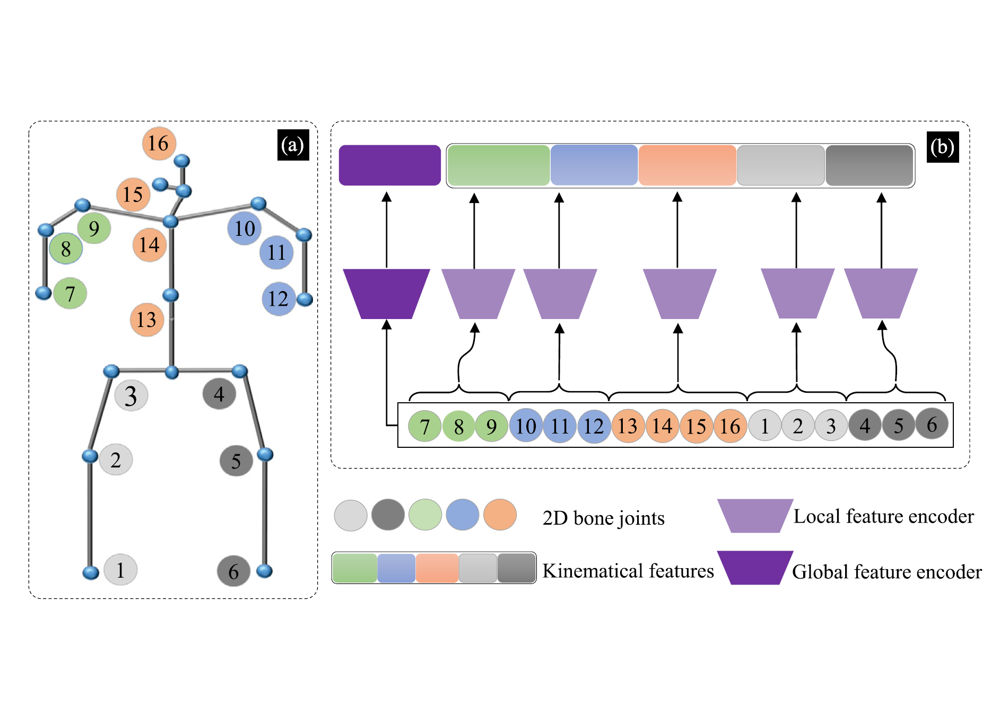
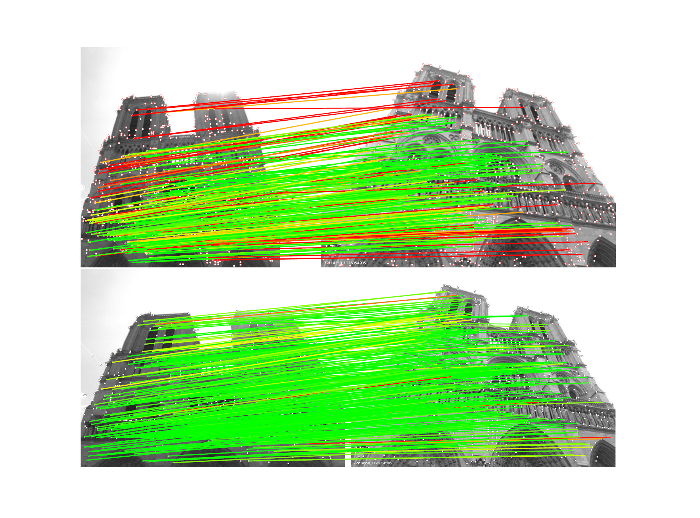

Songlin Du
About
Songlin Du is an associate professor with the School of Automation, Southeast University (SEU). Before joining SEU, he received a doctorate of science from Lanzhou University, Lanzhou, China, and a doctorate of engineering from Waseda University, Tokyo, Japan. His research focuses on computer vision and its applications in robotics. He is a Senior Member of the IEEE. He feels profoundly lucky to work alongside many brilliant brains.
Research Interests
- Computer Vision Algorithms
Multi-view image matching, structure from motion (SfM), 3D human motion analysis - High-Speed Vision Systems
Highly-parallel video processing, hardware-friendly machine learning
Teaching
- Pattern Recognition and Machine Learning
Undergraduate course, fall 2020, fall 2021, spring 2022, spring 2023, spring 2024, spring 2025 - Artificial Intelligence
Undergraduate course, fall 2020, fall 2021
Graduate course, fall 2020, spring 2021, spring 2022, spring 2023, spring 2024, spring 2025
Monograph
-
Recent Papers
-
 IEEE TPAMI
IEEE Transactions on Pattern Analysis and Machine Intelligence (IEEE TPAMI), 2025.
IEEE TPAMI
IEEE Transactions on Pattern Analysis and Machine Intelligence (IEEE TPAMI), 2025. -
CVPRIEEE/CVF Conference on Computer Vision and Pattern Recognition (CVPR), 2025.
-
 IEEE TIP
IEEE Transactions on Image Processing (IEEE TIP), 2025.
IEEE TIP
IEEE Transactions on Image Processing (IEEE TIP), 2025. -
 IEEE TCSVTIEEE Transactions on Circuits and Systems for Video Technology (IEEE TCSVT), 2025.
-
IEEE TASEIEEE Transactions on Automation Science and Engineering (IEEE TASE), 2025.
-
 IEEE TMMIEEE Transactions on Multimedia (IEEE TMM), 2025.
-
PRPattern Recognition (PR), 2025.
-
PRPattern Recognition (PR), 2025.
-
 ECCVEuropean Conference on Computer Vision (ECCV), 2024.
-
 ACCVAsian Conference on Computer Vision (ACCV), 2024.
-
 PRPattern Recognition (PR), 2024.
-
PRPattern Recognition (PR), 2024.
-
IEEE TIMTowards Better Generalization: Shape Feature-Enhanced Fastener Defect Detection with Diffusion ModelIEEE Transactions on Instrumentation and Measurement (IEEE TIM), 2024.
-
 IEEE TCSVTIEEE Transactions on Circuits and Systems for Video Technology (IEEE TCSVT), 2024.
-
 PRPattern Recognition (PR), 2024.
-
 PR
PR
-
IEEE TASEIEEE Transactions on Automation Science and Engineering (IEEE TASE), 2024.
-
 ICCV
IEEE/CVF International Conference on Computer Vision (ICCV), 2023.
ICCV
IEEE/CVF International Conference on Computer Vision (ICCV), 2023. -
AAAIAAAI Conference on Artificial Intelligence (AAAI), 2023.
-
 ICIPInternational Conference on Image Processing (ICIP), 2023.
-
ICIPInternational Conference on Image Processing (ICIP), 2023.
-
IEEE TIIIEEE Transactions on Industrial Informatics (IEEE TII), 2023.
-
IEEE TCSVTIEEE Transactions on Circuits and Systems for Video Technology (IEEE TCSVT), 2023.
-
IEEE TITSIEEE Transactions on Intelligent Transportation Systems (IEEE TITS), 2022.
-
 ICIP
International Conference on Image Processing (ICIP), 2022.
ICIP
International Conference on Image Processing (ICIP), 2022. -
IEEE TIMIEEE Transactions on Instrumentation and Measurement (IEEE TIM), 2022.
-
IEEE TASEIEEE Transactions on Automation Science and Engineering (IEEE TASE), 2022.
-
IEEE TCSVTIEEE Transactions on Circuits and Systems for Video Technology (IEEE TCSVT), 2022.
Powered by Jekyll and Minimal Light theme.
-